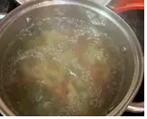

Fresh salad for summer, very easy to make and very healthyüçéüí™üèª
They hydrate and refresh, since vegetables are more than 90% water.
They provide nutrients such as vitamins, minerals and heart-healthy fats.
Ingredients
-
270 gr vegetable spirals
-
1 apple
-
1 banana
-
1 carrot
-
C/s butter
-
2 Greek yogurt
-
C/s pomegranate sauce
Recipe Instructions
-
First we will put water in a saucepan to boil, and when it is boiling add the macaroni.

-
While the macaroni is done, we will cut the carrot, the banana and the apple (it is advisable to leave
the banana in the refrigerator and the apple in a glass of water so that they do not oxidize).
-
When we already have it we will make the sauce mixing the yogurt with the sauce.

-
Next we will add butter in a frying pan and when it is hot we can over medium heat the banana, carrot
and apple.

-
And to finish, we will strain the macaroni and we will mix it with the sauce and the sofrito.
-
(Preferably consume when cold)
Return to top
Return to main page